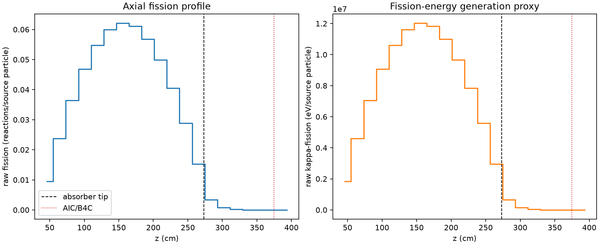
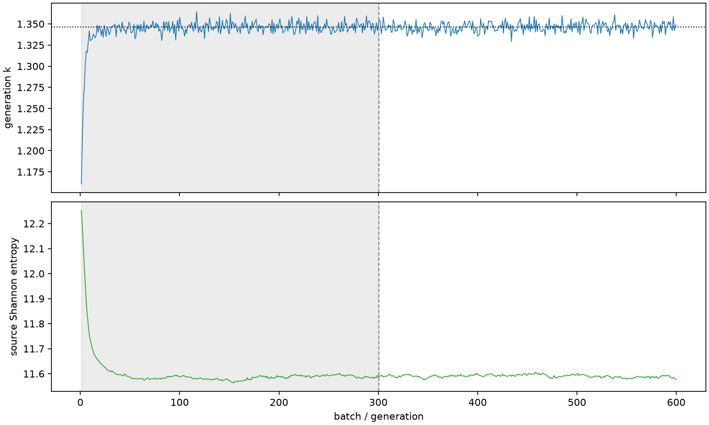

| field | value |
|---|---|
| experiment | V2-STAGE_256_OGRENCI_03-0024 |
| k | 1.346323767394067 |
| MC standard error | 0.00019189912434001519 |
| seconds | 933.0512191710004 |
| acceptance | not_assessed |
| convergence | review_required |
Completed is output integrity only; physical and statistical review required. Zero tallies do not prove zero production or zero uncertainty.
| diagnostic | value |
|---|---|
| geometric fuel voxels | 5280 |
| zero fission tally voxels | 54 |
| low signal fuel voxels | 1037 |
| low signal fission share | 9.928092515847111e-05 |
| low signal kappa share | 9.93187798238463e-05 |
| important fission share | 0.9500471086650119 |
| previous filter included | 4243 |
| duration estimate s | 1562.5173488400023 |
| actual minus estimate s | -629.4661296690019 |
| fission relative MC error | statistics |
|---|---|
| all_geometric_fuel | {"voxels": 5280, "positive_mean_voxels": 5226, "zero_mean_voxels": 54, "undefined_relative_error_voxels": 54, "median": 0.011102170949315303, "p95": 0.7286153179206608, "maximum": 1.0000000000000002} |
| low_signal | {"voxels": 1037, "positive_mean_voxels": 983, "zero_mean_voxels": 54, "undefined_relative_error_voxels": 54, "median": 0.5112510461353323, "p95": 1.0, "maximum": 1.0000000000000002} |
| important_95pct | {"voxels": 2931, "positive_mean_voxels": 2931, "zero_mean_voxels": 0, "undefined_relative_error_voxels": 0, "median": 0.008166945152560192, "p95": 0.01180726699763392, "maximum": 0.01588912794907284} |
| outside_previous_filter | {"voxels": 1037, "positive_mean_voxels": 983, "zero_mean_voxels": 54, "undefined_relative_error_voxels": 54, "median": 0.5112510461353323, "p95": 1.0, "maximum": 1.0000000000000002} |
| kappa_fission relative MC error | statistics |
|---|---|
| all_geometric_fuel | {"voxels": 5280, "positive_mean_voxels": 5226, "zero_mean_voxels": 54, "undefined_relative_error_voxels": 54, "median": 0.011090796172596586, "p95": 0.7272872149393554, "maximum": 1.0000000000000002} |
| low_signal | {"voxels": 1037, "positive_mean_voxels": 983, "zero_mean_voxels": 54, "undefined_relative_error_voxels": 54, "median": 0.5120856881224274, "p95": 1.0, "maximum": 1.0000000000000002} |
| important_95pct | {"voxels": 2931, "positive_mean_voxels": 2931, "zero_mean_voxels": 0, "undefined_relative_error_voxels": 0, "median": 0.008158256382597998, "p95": 0.01179578134332327, "maximum": 0.015874385082007888} |
| outside_previous_filter | {"voxels": 1037, "positive_mean_voxels": 983, "zero_mean_voxels": 54, "undefined_relative_error_voxels": 54, "median": 0.5120856881224274, "p95": 1.0, "maximum": 1.0000000000000002} |
| axial bin | fission share | kappa-fission share |
|---|---|---|
| 1 | 0.017181611732795306 | 0.017182276594284406 |
| 2 | 0.043173299605066086 | 0.04317318235115394 |
| 3 | 0.06624644823487977 | 0.0662463565974463 |
| 4 | 0.0851512968753987 | 0.08515080426109738 |
| 5 | 0.09953385468624644 | 0.09953328068425264 |
| 6 | 0.108973719830002 | 0.10897317942966699 |
| 7 | 0.11280855276062039 | 0.1128082662996603 |
| 8 | 0.11110304689184311 | 0.11110282287375861 |
| 9 | 0.10333179829960892 | 0.10333162041471443 |
| 10 | 0.09073587255469763 | 0.09073554325039163 |
| 11 | 0.07355456092919108 | 0.0735541534733552 |
| 12 | 0.05245904812836764 | 0.05245887445336073 |
| 13 | 0.027825471625537508 | 0.027825747430054226 |
| 14 | 0.006055404137226674 | 0.006057278734544089 |
| 15 | 0.0014174046161736986 | 0.0014178615400349038 |
| 16 | 0.0003427755287266988 | 0.00034287849564798453 |
| 17 | 8.11808580289535e-05 | 8.120998352832972e-05 |
| 18 | 1.9118968703186356e-05 | 1.91274319666076e-05 |
| 19 | 4.537086279837226e-06 | 4.538423560248387e-06 |
| 20 | 9.966506062082156e-07 | 9.97277520944736e-07 |
Histories include the inactive-to-active transition at batch 300. kappa-fission approximates fission energy production, not total heat deposition.

